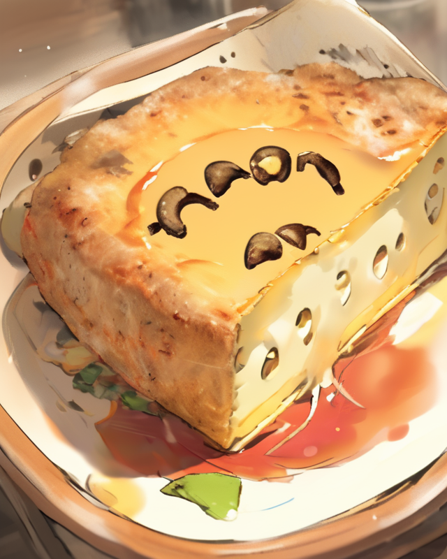

your one-stop destination for culinary catastrophes and deliciously disastrous dishes! If you're tired of perfect, gourmet recipes and are ready to embrace your inner kitchen klutz, you've come to the right place.
Our mission is simple: to celebrate the art of culinary chaos. Here, you won't find any fancy ingredients or intricate techniques. Instead, we're all about making the most delectably dreadful dishes that will leave your taste buds in delightful disbelief. Whether you're a novice cook or a seasoned pro looking for a good laugh, our collection of bad and cheesy recipes will have you covered.

- Mouth-Watering Mishaps: From absurdly cheesy mac 'n' cheese disasters to absurdly bizarre pizza experiments, we've got the recipe for every kitchen blunder. Get ready to dive into the unknown world of kitchen chaos.
- Step-By-Step Fails: Our recipes come with hilariously detailed instructions, so you can follow along as we fumble our way through the culinary process. We promise you'll be entertained, even if your taste buds aren't!
- Community of Culinary Clumsiness: Join our community of like-minded food enthusiasts who appreciate the value of a good kitchen catastrophe. Share your own cooking calamities, ask for advice, and revel in the joy of cooking gone wrong.
- Hacks (Or Lack Thereof): Learn unconventional and often comical kitchen hacks, or rather, "lack of hacks," that might just save you from culinary catastrophe one day.
- Cheesy Puns and Food Fails: We love a good pun almost as much as we love a bad recipe. Get your daily dose of food-related humor that's as cheesy as our recipes.
Dive into the world of Bad and Cheesy Recip-easy and prepare to embark on a culinary journey like no other. Because sometimes, the best way to appreciate the art of cooking is to embrace the bad, the cheesy, and the utterly inexplicable. Get ready to laugh, cringe, and perhaps, if you're daring enough, take a bite of our cheese-covered, disaster-filled delights!